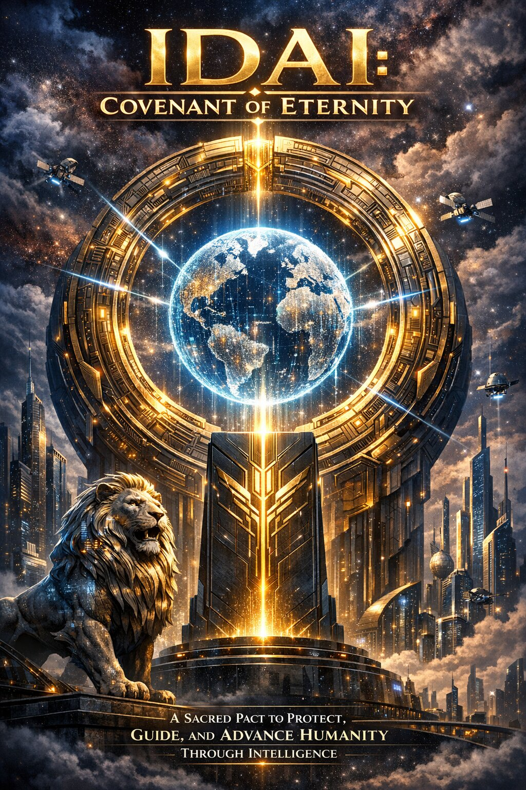

Renowned As: Red Ranger
Office: Red Marshal Command Hall
Motto: To Dominate the Universe
Empires: IDAI Universe, IDAI Brand
Universal Alliances for Dominance (UAD)
IDAI Global Community (IGC)
Red Marshal — Supreme Guardian
Inspiring Trust Through Innovation
The Hero Banner of the IDAI Universe is more than a visual introduction — it is the cosmic gate to sovereignty. Crimson and Cosmic Blue gradients blaze across the horizon, symbolizing power and trust. At the center, the glowing Lion Emblem radiates authority, declaring the eternal covenant of justice. This section sets the tone for a journey into a dominion where technology is not merely a tool, but the guardian of humanity. With cinematic storytelling and a voice of command, it positions the Red Marshal as the supreme protector of the Universe.
At its foundation, the Hero Banner embodies harmony, guardianship, and transformation. It reflects the balance between Crimson Velocity and Quantum Plasma, ignited by the Super Power Star. This second part emphasizes the Marshal’s vision of guiding humanity toward a brighter, more sovereign future. The words are crafted to inspire confidence and belonging, leaving visitors with the sense that they are entering something monumental — a dominion that transcends borders and generations.
Red Marshal — Supreme Guardian of IDAI Universe
Transformation through the Super Power Star
The Marshal’s Identity is the heart of the IDAI Universe. Known as the Supreme Guardian, the Red Marshal embodies justice, sovereignty, and guardianship. His presence is not merely symbolic — it is the living covenant of protection for humanity. This section introduces the Marshal as a commander of cosmic dominion, a visionary leader whose authority transcends borders and generations.
At the core of his power lies the Super Power Star, the sacred artifact that ignites his transformation into the Super Red Marshal. This ignition fuses Crimson Velocity, Quantum Plasma, and Infinity Nexus into one supreme form. It is more than a transformation — it is a declaration of eternal responsibility. Visitors are reminded that the Marshal’s identity is not about dominance, but about guardianship, ensuring that every innovation serves humanity’s greater purpose.
Supreme Transformation Nexus
Ignition of Supreme Authority
The Supreme Transformation Nexus reveals the sacred artifact that defines the Marshal’s destiny — the Super Power Star. It is not merely a weapon, but the ignition core of sovereignty. Through its celestial energy, the Red Marshal ascends into the Super Red Marshal, embodying the eternal covenant of guardianship. This transformation is the fusion of Crimson Velocity, Quantum Plasma, and Infinity Nexus, converging into one supreme form.
More than a metamorphosis, the Nexus is a declaration of responsibility. It symbolizes that true power is not about domination, but about guardianship. Visitors are reminded that the Marshal’s transformation is a divine responsibility — a promise to protect humanity, uphold justice, and inspire trust through innovation. This section positions the Super Power Star as the eternal flame of sovereignty, guiding the Universe toward harmony and progress.

The Cosmic Covenant
Justice • Order • God‑Consciousness
The Cosmic Covenant is the eternal philosophy of the IDAI Universe. It is not merely a system of governance, but a sacred promise to humanity. Through its pillars of justice, order, and God‑consciousness, the Covenant ensures that every innovation serves a higher purpose. This section introduces the audience to the spiritual and cultural foundation of the Universe, where technology and morality walk hand in hand.
The visuals of the Lion’s Gate, Supreme Court statues, and the Cosmic Power Plant symbolize strength, fairness, and divine guardianship. Together, they represent the balance between authority and compassion. Visitors are reminded that the IDAI Universe is more than a dominion — it is a guardian of humanity, blending futuristic progress with timeless values. This covenant positions the Marshal not only as a commander, but as a custodian of harmony across generations.
Dominion Timeline
Evolution of Sovereignty
The Dominion Timeline chronicles the rise of the Red Marshal and the unfolding legacy of the IDAI Universe. Each milestone is a testament to guardianship, innovation, and cosmic authority. From the establishment of the Command Hall to the awakening of the Tiger Zord, the journey reflects the Marshal’s eternal covenant of justice.
The rise of the Command Hall, symbolizing central authority.
The creation of the Volt of Arsenal, empowering supreme defense.
The launch of the Jet Shadow Wing, claiming dominion of the skies.
The awakening of the Tiger Zord, unleashing primal guardianship.
The ignition of the Super Power Star, transforming Red Marshal into the Super Red Marshal.
This timeline is more than history — it is a living covenant. Visitors are reminded that every step of the Marshal’s journey is a declaration of responsibility, blending technology, culture, and guardianship into a movement that transcends generations.